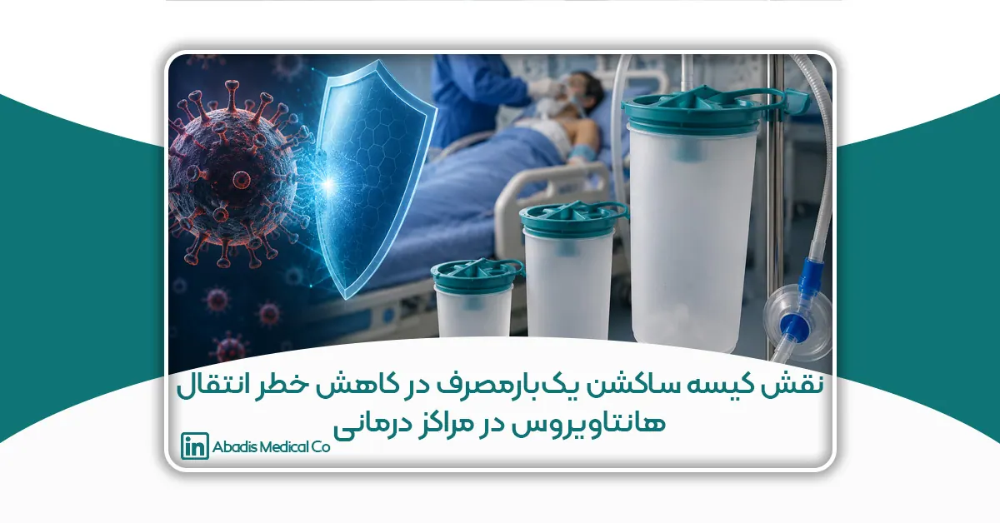

چکیده
هانتاویروسها (Hantaviruses) از جمله ویروسهای نوپدید و خطرناک مشترک بین انسان و حیوان هستند که عمدتاً از طریق تماس با ترشحات، ادرار و مدفوع جوندگان آلوده به انسان منتقل میشوند. این ویروسها میتوانند منجر به بروز بیماریهای شدیدی مانند سندرم ریوی هانتاویروس (HPS) و تب خونریزیدهنده همراه با سندرم کلیوی (HFRS) شوند که میزان مرگومیر قابلتوجهی دارند. با توجه به ماهیت انتقال ویروس از طریق ذرات معلق و ترشحات آلوده، رعایت اصول کنترل عفونت و استفاده از تجهیزات ایمن در مراکز درمانی اهمیت بسیار زیادی دارد.
یکی از مهمترین چالشهای بیمارستانها در مواجهه با بیماریهای ویروسی نوظهور، مدیریت ایمن ترشحات بیماران و کاهش تماس مستقیم کارکنان درمانی با مایعات آلوده است. در فرآیندهای ساکشن تنفسی و تخلیه ترشحات، استفاده از سیستمهای سنتی قابل شستوشو میتواند خطر انتشار آئروسلهای عفونی، آلودگی متقاطع و تماس شغلی با عوامل بیماریزا را افزایش دهد. در این میان، سیستمهای ساکشن بسته و کیسههای ساکشن یکبارمصرف بهعنوان یکی از فناوریهای نوین کنترل عفونت، نقش مهمی در کاهش ریسک انتقال عوامل ویروسی ایفا میکنند.
این مقاله با رویکرد مروری–تحلیلی، نقش کیسه ساکشن یکبارمصرف در کاهش خطر انتقال هانتاویروس در محیطهای درمانی را بررسی میکند. نتایج مطالعات بینالمللی و تجربیات بیمارستانی نشان میدهد که استفاده از سیستمهای ساکشن یکبارمصرف میتواند موجب کاهش تماس مستقیم با ترشحات عفونی، کاهش انتشار ذرات آلوده در هوا، کاهش آلودگی محیطی و افزایش ایمنی کارکنان درمانی شود. همچنین حذف فرآیند شستوشوی مخازن سنتی، علاوه بر کاهش مصرف آب و مواد ضدعفونیکننده، در کاهش تولید پسابهای آلوده بیمارستانی نیز مؤثر است.
بررسیها نشان میدهد که بهکارگیری فناوریهای نوین ساکشن یکبارمصرف نهتنها بخشی از راهبردهای کنترل عفونت در بیماریهای ویروسی محسوب میشود، بلکه در راستای اهداف توسعه پایدار، حکمرانی سبز و ارتقای ایمنی زیستی بیمارستانها نیز قرار دارد. از اینرو، توسعه و استفاده گسترده از این تجهیزات میتواند نقش مهمی در آمادگی نظام سلامت برای مقابله با بیماریهای عفونی نوظهور در آینده ایفا کند.
مقدمه
در دهههای اخیر، ظهور و گسترش بیماریهای ویروسی نوپدید (Emerging Viral Diseases) به یکی از مهمترین چالشهای نظام سلامت جهانی تبدیل شده است. افزایش تعامل انسان با حیات وحش، تغییرات اقلیمی، رشد شهرنشینی، مهاجرت جوندگان به مناطق انسانی و توسعه نامتوازن زیستمحیطی، زمینه را برای انتقال گسترده عوامل بیماریزا از حیوانات به انسان فراهم کرده است. در این میان، هانتاویروسها (Hantaviruses) بهعنوان یکی از خطرناکترین ویروسهای مشترک بین انسان و حیوان شناخته میشوند که میتوانند باعث بروز بیماریهای شدید تنفسی و کلیوی با میزان مرگومیر بالا شوند.
هانتاویروسها عمدتاً در بدن جوندگان وحشی زندگی میکنند و از طریق ادرار، بزاق و مدفوع این حیوانات به محیط منتقل میشوند. انسان معمولاً از طریق استنشاق ذرات آلوده معلق در هوا یا تماس با سطوح و ترشحات آلوده به ویروس مبتلا میشود. سندرم ریوی هانتاویروس (Hantavirus Pulmonary Syndrome – HPS) و تب خونریزیدهنده همراه با سندرم کلیوی (Hemorrhagic Fever with Renal Syndrome – HFRS) دو فرم اصلی بیماری ناشی از این ویروس هستند که میتوانند منجر به نارسایی حاد ریوی، شوک، اختلالات کلیوی و مرگ شوند.
اگرچه انتقال مستقیم انسان به انسان در اغلب گونههای هانتاویروس نادر است، اما کنترل ترشحات تنفسی و مایعات آلوده بیماران در مراکز درمانی اهمیت بسیار بالایی دارد. در محیطهای بیمارستانی، بهویژه بخشهای مراقبت ویژه (ICU)، اورژانس و اتاق عمل، فرآیند ساکشن ترشحات تنفسی یکی از اقدامات رایج درمانی محسوب میشود. در صورت استفاده از سیستمهای سنتی ساکشن قابل شستوشو، خطر انتشار آئروسلهای آلوده، تماس مستقیم کارکنان درمانی با ترشحات عفونی و آلودگی متقاطع افزایش مییابد. این مسئله میتواند احتمال انتقال عوامل بیماریزا به کادر درمان و آلودگی محیط بیمارستان را تشدید کند.
همهگیری بیماریهای ویروسی در سالهای اخیر، بهویژه تجربه جهانی مقابله با SARS، COVID-19 و سایر بیماریهای تنفسی، اهمیت استفاده از فناوریهای نوین کنترل عفونت را بیش از گذشته آشکار کرده است. در این میان، سیستمهای ساکشن بسته و کیسههای ساکشن یکبارمصرف بهعنوان یکی از مؤثرترین تجهیزات ایمنی زیستی در بیمارستانها شناخته میشوند. این فناوریها با حذف فرآیند تخلیه و شستوشوی مخازن سنتی، کاهش تماس مستقیم با ترشحات آلوده و جلوگیری از انتشار ذرات عفونی در هوا، نقش مهمی در کاهش خطر انتقال بیماریهای ویروسی دارند.
علاوه بر مزایای کنترل عفونت، استفاده از کیسههای ساکشن یکبارمصرف میتواند موجب کاهش مصرف آب، انرژی و مواد ضدعفونیکننده شده و در کاهش پسابهای آلوده بیمارستانی نیز مؤثر باشد. به همین دلیل، این فناوری نهتنها از منظر ایمنی زیستی بلکه از دیدگاه توسعه پایدار، مدیریت سبز بیمارستانی و حکمرانی زیستمحیطی نیز اهمیت پیدا کرده است.
هدف این مقاله بررسی نقش کیسه ساکشن یکبارمصرف در کاهش خطر انتقال هانتاویروس در مراکز درمانی و تبیین اهمیت فناوریهای نوین کنترل عفونت در مقابله با بیماریهای ویروسی نوظهور است. در این مطالعه، ضمن مرور ویژگیهای انتقال هانتاویروس، تأثیر سیستمهای ساکشن بسته بر کاهش مواجهه شغلی، آلودگی محیطی و ارتقای ایمنی کارکنان درمانی مورد تحلیل قرار میگیرد.
هانتاویروس و خطر انتقال در مراکز درمانی
هانتاویروسها (Hantaviruses) از جمله ویروسهای نوپدید و خطرناک مشترک بین انسان و حیوان هستند که عمدتاً از طریق تماس با ترشحات، ادرار و مدفوع جوندگان آلوده منتقل میشوند. مهمترین راه انتقال این ویروس به انسان، استنشاق ذرات معلق آلوده (Aerosols) در هوا است؛ بهویژه در محیطهایی که آلودگی ناشی از فضولات جوندگان وجود دارد. با این حال، در شرایط خاص، تماس با ترشحات تنفسی و مایعات آلوده بیماران نیز میتواند خطر بالقوهای برای انتقال ویروس در مراکز درمانی ایجاد کند.
در محیطهای بیمارستانی، بیماران مبتلا به عفونتهای شدید ویروسی معمولاً نیازمند مراقبتهای ویژه تنفسی، اکسیژنتراپی و ساکشن ترشحات هستند. فرآیند ساکشن یکی از مهمترین اقدامات درمانی در بیماران دارای نارسایی تنفسی محسوب میشود، اما در عین حال میتواند منجر به تولید آئروسلهای آلوده و انتشار عوامل بیماریزا در محیط شود. در صورتی که از سیستمهای سنتی ساکشن قابل شستوشو استفاده شود، خطر تماس مستقیم کارکنان درمانی با ترشحات عفونی، نشت مایعات آلوده و آلودگی محیط بیمارستان افزایش پیدا میکند.
مطالعات سازمان جهانی بهداشت (WHO) و مراکز کنترل بیماری آمریکا (CDC) نشان دادهاند که در بیماریهای ویروسی تنفسی، تولید آئروسل در حین اقدامات پزشکی از جمله ساکشن، اینتوباسیون و تهویه مکانیکی میتواند یکی از عوامل مهم انتقال عفونت به کادر درمان باشد. هرچند انتقال انسان به انسان در اغلب گونههای هانتاویروس نادر گزارش شده است، اما در برخی گونهها مانند Andes virus احتمال انتقال بین انسانها نیز مطرح شده است. به همین دلیل رعایت دقیق اصول کنترل عفونت در بیمارستانها اهمیت بسیار بالایی دارد.
یکی از مشکلات مهم در سیستمهای سنتی ساکشن، نیاز به تخلیه دستی مخزن و شستوشوی مکرر تجهیزات است. این فرآیند میتواند باعث پاشش ترشحات آلوده، تولید ذرات معلق و افزایش مواجهه شغلی کارکنان درمانی با عوامل بیماریزا شود. علاوه بر این، پساب حاصل از شستوشوی مخازن ساکشن ممکن است حاوی عوامل ویروسی و میکروبی باشد و در صورت دفع نامناسب، موجب آلودگی محیط زیست و منابع آبی گردد.
در بخشهای پرخطر بیمارستانی مانند ICU، اورژانس، اتاق عمل و بخشهای عفونی، احتمال مواجهه با ترشحات آلوده بیشتر است و همین موضوع استفاده از تجهیزات ایمنتر را ضروری میسازد. بر همین اساس، استفاده از سیستمهای ساکشن بسته و کیسههای ساکشن یکبارمصرف بهعنوان یکی از راهکارهای مؤثر کنترل عفونت مطرح شده است. این سیستمها با ایجاد یک چرخه بسته برای جمعآوری ترشحات، از انتشار آئروسلها، نشت مایعات و تماس مستقیم با ترشحات آلوده جلوگیری میکنند.
افزون بر ایمنی زیستی، کاهش تماس کارکنان با محیط آلوده میتواند از بروز استرس شغلی، فرسودگی روانی و خطر ابتلا به بیماریهای عفونی در کادر درمان نیز جلوگیری کند. تجربه همهگیریهای جهانی اخیر نشان داده است که حفاظت از نیروهای درمانی، یکی از ارکان اصلی مدیریت بحرانهای بهداشتی محسوب میشود.
در مجموع، با توجه به ماهیت انتقال هانتاویروس و اهمیت کنترل ترشحات تنفسی در محیطهای درمانی، استفاده از فناوریهای نوین ساکشن و تجهیزات یکبارمصرف ایمن میتواند نقش مهمی در کاهش خطر انتقال بیماری، افزایش ایمنی کارکنان درمانی و بهبود مدیریت عفونت در بیمارستانها ایفا کند.
نقش کیسه ساکشن یکبارمصرف در کنترل عفونت
کنترل عفونت در مراکز درمانی یکی از مهمترین ارکان حفظ ایمنی بیماران، کارکنان درمانی و محیط بیمارستان محسوب میشود. در سالهای اخیر، با افزایش شیوع بیماریهای ویروسی نوظهور و مقاوم، اهمیت استفاده از تجهیزات پزشکی ایمن و فناوریهای کاهشدهنده آلودگی بیش از گذشته مورد توجه قرار گرفته است. در این میان، سیستمهای ساکشن پزشکی بهدلیل تماس مستقیم با ترشحات، خون و مایعات بدن بیماران، از جمله تجهیزات پرخطر در انتقال عوامل عفونی به شمار میروند.
در سیستمهای سنتی ساکشن، مخازن جمعآوری ترشحات پس از هر بار استفاده نیاز به تخلیه، شستوشو و ضدعفونی دارند. این فرآیند میتواند موجب تماس مستقیم کارکنان با مایعات آلوده، انتشار آئروسلهای عفونی، نشت ترشحات و آلودگی متقاطع شود. همچنین در صورت شستوشوی نامناسب تجهیزات، احتمال باقی ماندن عوامل بیماریزا و انتقال آن به بیماران بعدی وجود دارد.
کیسه ساکشن یکبارمصرف (Disposable Suction Liner Bag) بهعنوان یک سیستم بسته و ایمن، راهکاری نوین برای کاهش این مخاطرات محسوب میشود. این فناوری با جمعآوری ترشحات در یک کیسه استریل و قابل تعویض، نیاز به شستوشوی مخازن سنتی را حذف میکند و در نتیجه خطر تماس مستقیم با مواد عفونی به میزان قابل توجهی کاهش مییابد.
یکی از مهمترین مزایای کیسه ساکشن یکبارمصرف، جلوگیری از انتشار آئروسلهای آلوده در هنگام تخلیه ترشحات است. در سیستمهای سنتی، باز کردن مخزن و انتقال مایعات میتواند باعث پخش ذرات معلق آلوده در محیط شود؛ ذراتی که در انتقال بسیاری از عوامل بیماریزا از جمله ویروسهای تنفسی نقش دارند. سیستمهای ساکشن بسته با حذف این فرآیند، نقش مهمی در کاهش آلودگی هوای محیط بیمارستان ایفا میکنند.
از سوی دیگر، استفاده از کیسههای ساکشن یکبارمصرف موجب کاهش آلودگی متقاطع (Cross-contamination) میشود. در این سیستم، برای هر بیمار از یک کیسه مجزا استفاده شده و پس از پایان کار، کیسه بدون نیاز به تخلیه دفع میشود. این موضوع احتمال انتقال عوامل عفونی بین بیماران را به حداقل میرساند و سطح ایمنی زیستی بیمارستان را افزایش میدهد.
مطالعات بینالمللی نشان دادهاند که استفاده از سیستمهای ساکشن یکبارمصرف میتواند میزان مواجهه شغلی کارکنان درمانی با ترشحات آلوده را تا بیش از ۸۰ درصد کاهش دهد. این مسئله بهویژه در بخشهای پرخطر مانند ICU، اتاق عمل، اورژانس و بخشهای عفونی اهمیت بسیار بالایی دارد. کاهش تماس با محیط آلوده علاوه بر حفاظت فیزیکی کارکنان، موجب کاهش استرس شغلی و افزایش امنیت روانی کادر درمان نیز میشود.
علاوه بر مزایای ایمنی، کیسههای ساکشن یکبارمصرف در کاهش مصرف آب، انرژی و مواد ضدعفونیکننده نیز مؤثر هستند. حذف فرآیند شستوشوی مخازن سنتی باعث کاهش تولید پساب آلوده بیمارستانی شده و نقش مهمی در حفاظت از محیط زیست و تحقق اهداف مدیریت سبز بیمارستانی ایفا میکند.
در بیماریهای ویروسی نوظهور مانند هانتاویروس، کرونا، آنفلوانزا و سایر عفونتهای تنفسی، استفاده از تجهیزات پزشکی ایمن و سیستمهای بسته کنترل ترشحات، بخشی مهم از راهبردهای کنترل عفونت محسوب میشود. به همین دلیل، بسیاری از دستورالعملهای بینالمللی کنترل عفونت بر استفاده از تجهیزات یکبارمصرف و کاهش تماس مستقیم با ترشحات بیماران تأکید دارند.
در مجموع، کیسه ساکشن یکبارمصرف نهتنها یک تجهیز مصرفی ساده، بلکه بخشی از زیرساخت ایمنی زیستی و کنترل عفونت در بیمارستانهای مدرن محسوب میشود. توسعه و استفاده گسترده از این فناوری میتواند نقش مهمی در کاهش انتقال بیماریهای عفونی، حفاظت از کادر درمان، کاهش آلودگی محیطی و ارتقای کیفیت خدمات درمانی داشته باشد.
اهمیت فناوریهای نوین در مدیریت بیماریهای نوظهور
در دهههای اخیر، افزایش شیوع بیماریهای نوظهور و بازپدید (Emerging and Re-emerging Diseases) به یکی از بزرگترین چالشهای نظام سلامت جهانی تبدیل شده است. گسترش سریع ویروسهایی مانند هانتاویروس، کرونا (COVID-19)، ابولا، سارس و آنفلوانزاهای نوترکیب نشان داده است که سیستمهای درمانی سنتی بهتنهایی پاسخگوی تهدیدات جدید زیستی نیستند و استفاده از فناوریهای نوین پزشکی و تجهیزات پیشرفته کنترل عفونت به یک ضرورت تبدیل شده است.
بیماریهای نوظهور معمولاً دارای سرعت انتقال بالا، الگوهای ناشناخته اپیدمیولوژیک و قابلیت ایجاد بحرانهای گسترده بهداشتی هستند. در چنین شرایطی، فناوریهای نوین نقش کلیدی در شناسایی سریع بیماری، کنترل انتشار، حفاظت از کادر درمان و مدیریت ایمن بیماران ایفا میکنند. تجربه همهگیری COVID-19 بهخوبی نشان داد که کشورها و مراکز درمانی مجهز به فناوریهای پیشرفته، عملکرد موفقتری در کنترل بحران و کاهش مرگومیر داشتهاند.
یکی از مهمترین حوزههای فناوری در مدیریت بیماریهای نوظهور، تجهیزات کنترل عفونت و ایمنی زیستی است. سیستمهای بسته ساکشن، تجهیزات یکبارمصرف، فیلترهای آنتیباکتریال، سامانههای تهویه هوشمند، دستگاههای ضدعفونی پیشرفته و فناوریهای کاهش تولید آئروسل، همگی نقش مهمی در کاهش انتقال عوامل بیماریزا در محیطهای درمانی دارند.
در بسیاری از بیماریهای ویروسی تنفسی، از جمله هانتاویروس و کرونا، آئروسلهای آلوده یکی از مهمترین مسیرهای انتقال محسوب میشوند. به همین دلیل، استفاده از فناوریهایی که تماس مستقیم با ترشحات عفونی را کاهش میدهند، اهمیت ویژهای پیدا کرده است. سیستمهای ساکشن بسته و کیسههای ساکشن یکبارمصرف نمونهای از این فناوریها هستند که با جلوگیری از نشت ترشحات، کاهش انتشار ذرات معلق و حذف فرآیند شستوشوی مخازن آلوده، سطح ایمنی بیمارستان را بهطور قابل توجهی افزایش میدهند.
فناوریهای نوین علاوه بر کنترل عفونت، در تشخیص سریع بیماری نیز تحول بزرگی ایجاد کردهاند. استفاده از روشهای مولکولی مانند Real-Time PCR، توالییابی ژنتیکی (Genome Sequencing)، هوش مصنوعی در تحلیل دادههای اپیدمیولوژیک و سامانههای پایش آنلاین بیماریها، امکان شناسایی سریع عوامل بیماریزا و کنترل اپیدمیها را فراهم کرده است.
از سوی دیگر، تجهیزات هوشمند پزشکی و سیستمهای مانیتورینگ دیجیتال به پزشکان کمک میکنند تا وضعیت بیماران را با دقت بیشتری ارزیابی کرده و درمان مؤثرتری ارائه دهند. در بخشهای مراقبت ویژه، استفاده از فناوریهای مدرن میتواند خطر خطاهای انسانی را کاهش داده و کیفیت مراقبت را افزایش دهد.
یکی دیگر از جنبههای مهم فناوریهای نوین، نقش آنها در تحقق مدیریت سبز و توسعه پایدار در نظام سلامت است. بسیاری از تجهیزات جدید پزشکی با هدف کاهش مصرف آب، انرژی و مواد شیمیایی طراحی شدهاند. استفاده از سیستمهای یکبارمصرف ایمن، علاوه بر کاهش خطر انتقال عفونت، میتواند موجب کاهش پسابهای آلوده بیمارستانی و کاهش مصرف منابع طبیعی شود.
در این میان، صنایع دانشبنیان نقش مهمی در توسعه فناوریهای بومی ایفا میکنند. تولید تجهیزات پزشکی پیشرفته در داخل کشور نهتنها موجب ارتقای استقلال نظام سلامت میشود، بلکه در زمان بحرانهای جهانی میتواند از وابستگی به واردات جلوگیری کند. توسعه فناوریهای پزشکی داخلی همچنین میتواند زمینهساز صادرات تجهیزات سلامتمحور و ارتقای جایگاه علمی و صنعتی کشور در بازارهای بینالمللی باشد.
در مجموع، مدیریت مؤثر بیماریهای نوظهور بدون بهرهگیری از فناوریهای نوین امکانپذیر نیست. آینده نظام سلامت جهانی به سمت استفاده گسترده از تجهیزات هوشمند، سیستمهای ایمن کنترل عفونت، فناوریهای تشخیصی سریع و راهکارهای پایدار زیستمحیطی حرکت میکند. سرمایهگذاری در این حوزه نهتنها یک ضرورت پزشکی، بلکه بخشی از راهبرد امنیت سلامت و آمادگی کشورها در برابر بحرانهای آینده محسوب میشود.
نتیجهگیری
بیماریهای ویروسی نوظهور مانند هانتاویروس، بهدلیل قدرت بیماریزایی بالا، قابلیت ایجاد اپیدمی و تهدید جدی برای نظام سلامت، نیازمند رویکردهای نوین در حوزه کنترل عفونت و ایمنی زیستی هستند. تجربه جهانی در مقابله با بیماریهای عفونی نشان داده است که حفاظت از کادر درمان، مدیریت ایمن ترشحات عفونی و کاهش آلودگی محیط بیمارستان، از مهمترین عوامل در کنترل انتشار بیماریها محسوب میشوند.
در این میان، فناوریهای نوین پزشکی و تجهیزات ایمن یکبارمصرف نقش بسیار مهمی در کاهش خطر انتقال عوامل بیماریزا دارند. کیسههای ساکشن یکبارمصرف بهعنوان بخشی از سیستمهای ساکشن بسته، میتوانند با کاهش تماس مستقیم کارکنان درمانی با ترشحات آلوده، جلوگیری از انتشار آئروسلهای عفونی، کاهش آلودگی متقاطع و حذف فرآیند شستوشوی مخازن سنتی، سطح ایمنی زیستی مراکز درمانی را بهطور قابل توجهی ارتقا دهند.
علاوه بر مزایای کنترل عفونت، استفاده از این فناوریها میتواند موجب کاهش مصرف آب، انرژی و مواد ضدعفونیکننده شده و در کاهش تولید پسابهای آلوده بیمارستانی نیز مؤثر باشد. از اینرو، سیستمهای ساکشن یکبارمصرف نهتنها ابزاری برای حفاظت از سلامت انسان، بلکه بخشی از راهبردهای توسعه پایدار و مدیریت سبز در بیمارستانها محسوب میشوند.
با توجه به افزایش احتمال ظهور بیماریهای ویروسی جدید در آینده، سرمایهگذاری در فناوریهای نوین کنترل عفونت، توسعه تجهیزات پزشکی دانشبنیان و ارتقای زیرساختهای ایمنی بیمارستانی، ضرورتی اجتنابناپذیر برای نظام سلامت کشورها خواهد بود. استفاده گسترده از تجهیزات ایمن و استاندارد میتواند نقش مهمی در آمادگی مراکز درمانی برای مقابله با بحرانهای بهداشتی آینده و حفاظت از جان بیماران و کادر درمان ایفا کند.
منابع
- World Health Organization (WHO). Safe management of wastes from health-care activities. Geneva: WHO; 2022.
- Centers for Disease Control and Prevention (CDC). Hantavirus Prevention and Infection Control Guidelines. Atlanta: CDC; 2024.
- Jonsson CB, Figueiredo LTM, Vapalahti O. Hantaviruses: an emerging global public health problem. Clinical Microbiology Reviews. 2010;23(2):412–441.
- Kruger DH, Figueiredo LTM, Song JW, Klempa B. Hantaviruses—globally emerging pathogens. Journal of Clinical Virology. 2015;64:128–136.
- Vaheri A, Strandin T, Hepojoki J, et al. Uncovering the mysteries of hantavirus infections. Nature Reviews Microbiology. 2013;11(8):539–550.
- Centers for Disease Control and Prevention (CDC). Guidelines for Environmental Infection Control in Health-Care Facilities. 2023.
- Gordon A, Schiller S. Disposable suction systems and infection control in hospitals. Journal of Biomedical Research. 2023;5(2):36–45.
- Sharafi N. Environmental and infection-control benefits of disposable suction liners in healthcare centers. Biomedical & Allied Research. 2023;5(3):45–53.
- Weber DJ, Rutala WA. Environmental issues and infection control in healthcare facilities. Infection Control & Hospital Epidemiology. 2019;40(6):652–657.
- Kampf G, Todt D, Pfaender S, Steinmann E. Persistence of coronaviruses and other respiratory viruses on surfaces and their control with disinfectants. Journal of Hospital Infection. 2020;104(3):246–251.
- Siegel JD, Rhinehart E, Jackson M, Chiarello L. Guideline for Isolation Precautions: Preventing Transmission of Infectious Agents in Healthcare Settings. CDC; 2022.
- Rutala WA, Weber DJ. Disinfection and sterilization in healthcare facilities: current issues and new technologies. American Journal of Infection Control. 2021;49(3):A11–A17.
- International Society for Infectious Diseases (ISID). Emerging Viral Diseases and Infection Prevention Strategies. 2023.
- European Centre for Disease Prevention and Control (ECDC). Healthcare-associated infection prevention and control guidance. Stockholm: ECDC; 2023.
- Occupational Safety and Health Administration (OSHA). Healthcare Worker Protection Against Infectious Diseases. Washington DC; 2022.